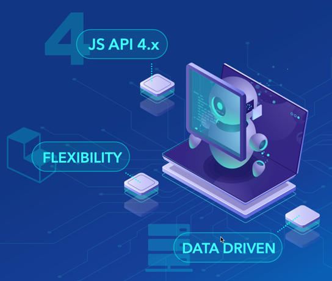

ArcGIS Experience Builder for Developers: Widgets, Dev, Deployment, and Automation
Shawn Goulet (Senior Software Develooper | Esri Professional Services | Advanced Analytics)
Slides:
presentation slides
Intro to Experience Builder
What is ArcGIS Experience Builder
|
ArcGIS Experience Builder empowers you to quickly transform your data into compelling single or mulit-page web apps
|
 |
ArcGIS Experience Builder Editions
|

|
Custom widget development
Custom widget demo
Custom theme development
Custom theme demo
Code collaboration
With your development team
Deployment
Deployment automation
DevOps